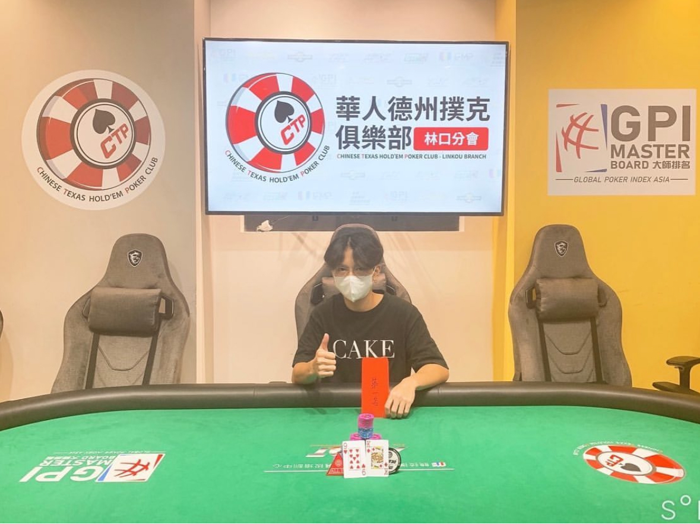

張箕聖大肌 barney
A110082038
世新大學資傳三甲張箕聖，目前擔任線下職業撲克牌手及荷官，希望可以提早退休。本人身高不方便透漏，體重58公斤，我的ig是@____shennnnn，女朋友是@nanaouyang，歡迎追蹤，謝謝大家。
信箱:a110082038@mail.shu.edu.tw
從大一到大三就職二年的喜歡咖哩，具備內外場技能，非常會煮咖哩。在烹飪咖哩的過程中，我學到了許多寶貴的東西。首先，我意識到了耐心和細心的重要性。煮咖哩需要一個長時間的過程，需要不斷地調味、品嚐，直到達到理想的口感和味道。這讓我明白了耐心等待和細心呵護是成功的關鍵。 其次，我學會了團隊合作的重要性。在烹飪過程中，我們需要與其他廚師和工作人員合作，協調動作，確保每道菜都能夠及時上桌。這讓我明白了團隊的力量，只有團隊合作，才能夠完成一項任務。 另外，我也學會了不斷學習和創新的精神。咖哩的配方和烹飪技巧是不斷變化的，我們需要不斷地學習新的食材和烹飪方法，以保持競爭力。同時，我們也需要保持創新的思維，不斷嘗試新的配方和口味，以滿足顧客的需求和期待。 最後，我學到了堅持不懈和不放棄的精神。在烹飪過程中，我們可能會遇到各種困難和挑戰，但只要堅持不懈，努力克服，最終都能夠取得成功。這讓我明白了只要有信心和毅力，就能夠克服一切困難，實現自己的目標和夢想。 總的來說，煮咖哩的過程不僅是一種烹飪技術，更是一種人生的體驗。通過這個過程，我學會了耐心、團隊合作、學習創新和堅持不懈的重要性，這些都是我人生中寶貴的財富，將伴隨著我走向未來的道路。
目前是全職撲克牌手，一天有一半的時間再打線上跟現場的現金桌，另一半的時間在study並檢討手牌，生涯總獎金10萬新台幣。 自從我第一次接觸撲克牌以來，我就被這個遊戲所吸引。對我來說，撲克不僅僅是一種遊戲，更像是一種藝術和科學的結合。我深深著迷於其中的策略、心理戰和數學計算。 起初，我的撲克之路並不順遂。我記得那些早期的日子，經常因為缺乏經驗而輸得一敗塗地。但是，我從每一次失敗中學到了寶貴的教訓，並且永不放棄。我花了大量的時間研究和學習遊戲中的各個細節，從基本的牌型和概率到高級的讀牌技巧和心理學原理。 隨著時間的推移，我逐漸開始在撲克桌上取得了一些成功。我的決策變得更加自信和理性，我也開始建立起自己的風格和策略。每一場比賽都是一次寶貴的經驗，無論是勝利還是失敗，我都會從中吸取教訓並不斷進步。 在我職業生涯的早期，我經歷了許多挑戰和困難。競爭激烈，經濟不穩定，但這一切都沒有擋住我對撲克的熱情和追求。我努力工作，不斷提升自己的技能，並且始終保持著對成功的渴望。 如今，我可以自豪地說我是一名專業的撲克牌手。我憑藉著對遊戲的熱愛和不懈的努力，已經在各種比賽中取得了優異的成績。撲克不僅帶給我經濟上的穩定，更重要的是，它讓我找到了一個充滿挑戰和激情的職業，讓我每天都能全情投入並享受其中的樂趣。我期待著未來的挑戰和成就，並且將繼續努力不懈，追逐撲克之夢。
在高中的時光是人生中最寶貴的一段時光之一，我度過了許多難忘的經歷和珍貴的回憶。作為一名高中生，我不僅在學業上努力學習，還積極參與了各種課外活動，其中擔任吉他社公關是我其中的一個角色。 首先，讓我分享一下我在吉他社的經歷。作為一名對音樂充滿熱情的人，我一直夢想能在學校裡找到一個能夠與志同道合的朋友一起分享音樂的地方。因此，我決定參加了學校的吉他社。起初，我只是作為一名普通的成員參與活動，但很快我就發現了一個機會——社團中缺少一名公關。我向社團提出了願意擔任公關的申請，並經過了一番競選和面試後，成功地獲得了這個職位。 擔任吉他社公關對我來說是一個全新的挑戰和機會。作為公關，我負責組織社團內外的各種活動，包括音樂表演、吉他工作坊、校內展覽等。這不僅讓我學會了組織和協調能力，還讓我更深入地了解了音樂和社交的重要性。我努力舉辦各種活動，吸引更多的同學參與其中，並且不斷提升吉他社的知名度和影響力。 在高中的日子裡，我不僅努力學習，還積極參與了社會實踐和志願服務。我曾參與過各種志願活動，如社區清潔、老人院探訪、學習輔導等，這些經歷不僅讓我更加關注社會問題，還培養了我服務他人和關懷社會的意識。 總的來說，高中生活是一段充滿挑戰和機遇的旅程，我從中獲得了許多寶貴的經驗和教訓。我學會了堅持不懈、勇於嘗試、團隊合作、社會責任感等重要品質，這些將成為我人生中的寶貴財富。我將永遠珍惜高中生活帶給我的美好回憶，並將這些經驗和教訓融入到我的未來人生中。
作為一位職業撲克牌手，我的日常生活總是充滿著挑戰和樂趣。每天清晨，我都會開始我的訓練，不斷研究新的策略和技巧，以應對各種不同的對手和場景。在賽局之外，我熱愛閱讀有關撲克遊戲理論和心理學的書籍，不斷提升自己的專業知識。下班後，我會與其他玩家聚會，分享我們的心得和經驗，同時也喜歡參加各種撲克比賽，挑戰自己的極限，追求更高的成就。對我來說，撲克不僅是一份職業，更是我熱愛的生活方式。
作為一位職業撲克牌手，我生活充滿了多樣的興趣。每天除了投入於牌局的訓練和研究外，我也熱愛運動，特別是打籃球。籃球不僅讓我放鬆身心，還能提升我的體能和反應能力，有助於我在牌局中更加靈活應對各種情況。此外，我也喜歡與朋友一同分享籃球的樂趣，在場上共同挑戰自我，享受運動帶來的快樂與成就感。
平時也喜歡健身的我從每次的鍛煉中獲得了許多啟示。首先，我學會了堅持和毅力。在健身的過程中，每一次挑戰都需要我付出努力和堅持不懈的精神，這讓我明白了只有堅持下去，才能夠取得進步和成就。 其次，我學會了自律和規律。健身需要我每天保持一定的鍛煉量和飲食規律，這讓我懂得了如何控制自己的行為和生活方式，讓自己更加健康和有規律。 另外，我也學到了專注和集中的能力。在健身的過程中，我需要專注於每一個動作和每一組重量，這讓我學會了如何集中精神，克服分心和拖延，從而提高了我的效率和效果。 最後，我還學會了平衡和調整。健身不僅需要我鍛煉身體，還需要我調整飲食和休息，保持身心平衡。這讓我懂得了如何平衡各方面的生活，使自己更加健康和快樂。 總的來說，健身不僅讓我擁有了健康的身體，還讓我學會了堅持、自律、專注和平衡的重要性，這些都是我人生中寶貴的財富，將伴隨著我走向更美好的未來。